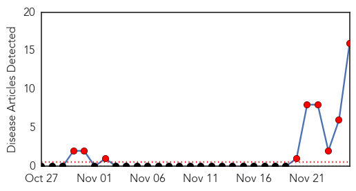
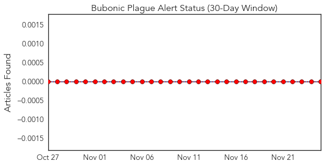
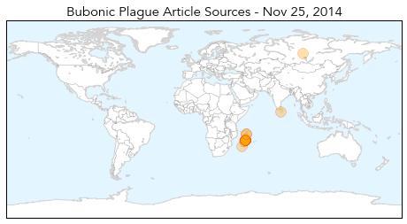

Bubonic Plague
30-Day Web Trend
9 alerts, 0 warnings

30-Day Twitter Trend
0 alerts, 0 warnings

Article Locations
Article Confidences
Top Articles:
- 0.994
- Plague Outbreak in Madagascar Could Spread
- 0.994
- Plague Outbreak in Madagascar Could Spread
- 0.990
- Madagascar: UN health agency warns of ‘rapid' spread of plague in capital city
- 0.989
- Madagascar: UN health agency warns of 'rapid' spread of plague in capital city
- 0.988
- WHO Warns Of Rapid Spread Of Plague In Madagascar Capital
- 0.985
- 47 already dead in Madagascar plague outbreak — RT News
- 0.977
- Bubonic Plague Strikes Madagascar
- 0.973
- Bubonic Plague Spreads in Madagascar
- 0.972
- Death toll from plague in Madagascar rises to 47
- 0.967
- Bubonic Plague Outbreak Kills 40 In Madagascar
- 0.967
- Madagascar Faces More than 100 Potential Cases of Bubonic Plague as Death Toll Rises to 47
- 0.966
- Bubonic Plague Kills 40 in Madagascar
- 0.963
- Plague kills 47 in Madagascar, moving into the slums of Antananarivo
- 0.936
- Madagascar bubonic plague outbreak has claimed 47 victims
- 0.910
- Plague spreads to Madagascar’s capital - Africa
- 0.845
- Bubonic plague festers in Madagascar′s slums
Top Tweets:
-
No tweets found for Nov 25, 2014
Measles
30-Day Web Trend
2 alerts, 3 warnings

30-Day Twitter Trend
0 alerts, 0 warnings

Article Locations

Article Confidences

Top Articles:
Top Tweets:
-
No tweets found for Nov 25, 2014